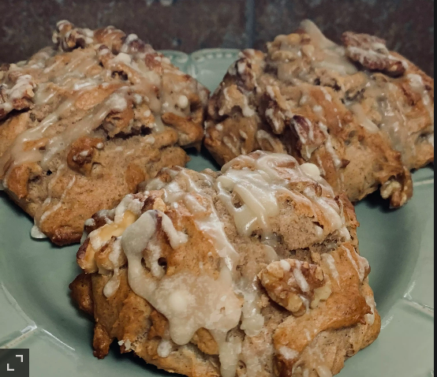

Banana scones

Description
If you like banana bread, and you like scones, you will love banana scones.
Estos son CRACK!
This recipe will serve 11 portions.
Ingredients
- 2 medium bananas
- ½ cup brown sugar
- ¼ cup Greek yogurt
- 1 large egg
- 1 teaspoon vanilla extract
- 3 teaspoons ground cinnamon
- 2½ teaspoons baking powder
- ½ teaspoon salt
- 2½ cups all-purpose flour
- 5 tablespoons unsalted butter, chilled
- 1 cup chopped walnuts, or more to taste
For glaze:
- ⅓ cup maple syrup
- 2 tablespoons unsalted butter
- 1 cup confectioners' sugar, sifted
Instructions
- Preheat the oven to 400 degrees F (200 degrees C). Grease a cookie sheet.
- Place bananas in a large bowl; beat with an electric mixer until mashed. Add brown sugar, yogurt, egg, and vanilla, beating until smooth. Add cinnamon, baking powder, and salt, beating to combine. Add flour, 1 cup at a time, beating just until combined after each addition. (Do not overmix)
- Grate chilled butter into batter using a cheese grater. Beat to combine. Fold in walnuts using a rubber spatula. Drop batter by generous 1/4 cupfuls onto the prepared cookie sheet.
- Bake in the preheated oven until edges and tops of scones are golden and a toothpick inserted in the center of a scone comes out with only crumbs, 17 to 20 minutes.
- When scones have a few minutes left in the oven, combine maple syrup and butter for glaze in a small saucepan over medium heat. Cook until butter melts completely; do not boil. Remove from heat. Add just enough confectioners' sugar, whisking in a small amount at a time, to reach desired consistency for glaze.
- Drizzle glaze over scones using a spoon or whisk.